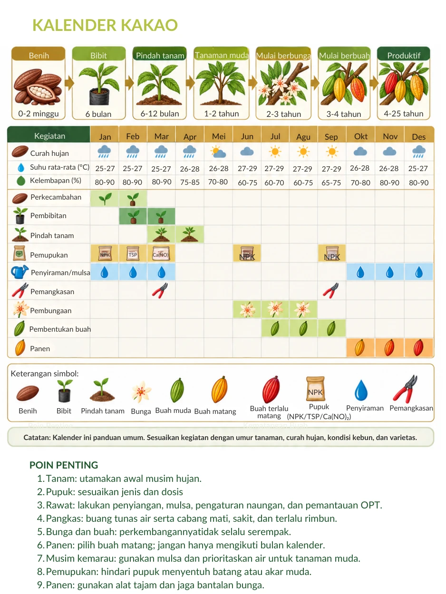

Awal musim hujan
Prioritaskan waktu tanam ketika air mendukung pertumbuhan tanaman muda.
Belajar menyiapkan kebun, merawat tanaman, dan menangani hasil panen.
Buka tahap yang ingin dipelajari. Ringkasan ini membantu mengenali kegiatan kebun; praktik teknis perlu menyesuaikan tanaman dan kondisi setempat.
Perhatikan tanah, air, drainase, topografi, serta tanaman penaung. Gunakan peta untuk mengenali konteks wilayah dan periksa kondisi kebun secara langsung sebelum menentukan tindakan.
Kenali asal dan kesehatan bibit. Atur titik tanam, persiapkan lubang, serta rencanakan penaung sementara dan permanen. Penanaman perlu menyesuaikan kondisi lahan dan ketersediaan air.
Lakukan penyiangan sesuai kondisi gulma, gunakan mulsa, dan perhatikan kebutuhan air tanaman muda. Pemupukan disesuaikan dengan kebutuhan tanaman serta kondisi tanah.
Pemangkasan membentuk tajuk, memperbaiki sirkulasi udara, dan menjaga masuknya cahaya. Buang tunas air serta cabang mati, sakit, atau terlalu rimbun. Amati gejala hama dan penyakit secara rutin dan diskusikan pengendaliannya dengan pendamping.
Playbook memperkenalkan sambung samping dan sambung pucuk untuk memanfaatkan bahan tanaman unggul. Pelajari praktiknya bersama petani berpengalaman agar pemilihan batang, entres, pengikatan, dan perawatan sambungan tepat.
Pilih buah yang matang dan gunakan alat yang tajam serta bersih. Hindari merusak bantalan bunga dan buah kecil. Pisahkan buah rusak dari hasil yang baik.
Gunakan biji dari buah matang, wadah yang bersih dengan drainase, serta penutup yang sesuai. Playbook mencontohkan proses sekitar lima hari dengan pembalikan. Lama dan hasil proses perlu diperiksa sesuai bahan, volume, dan kondisi fermentasi.
Jemur pada alas bersih atau gunakan sarana pengeringan yang terlindung dari hujan. Balik biji agar pengeringan merata. Pisahkan benda asing serta biji berjamur, berlubang, pecah, atau tidak normal sebelum penyimpanan.
Kalender dalam playbook merupakan panduan umum. Sesuaikan dengan umur tanaman, curah hujan, varietas, dan kondisi kebun; panen mengikuti kematangan buah.

Klik gambar untuk memperbesar.
Prioritaskan waktu tanam ketika air mendukung pertumbuhan tanaman muda.
Perhatikan penyiraman, mulsa, dan pengaturan naungan, terutama bagi bibit dan tanaman muda.
Pantau kondisi kebun, atur pemangkasan, catat pekerjaan, dan panen buah yang sudah matang.
Pengolahan cokelat membutuhkan kebersihan, pengendalian proses, peralatan yang sesuai, dan keterampilan. Pasta kakao juga dapat dipres untuk menghasilkan lemak kakao dan bungkil yang kemudian diolah menjadi bubuk.